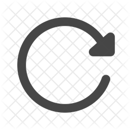

Ημερομηνία
Άνοιγμα αρχείου :
Άνοιγμα αρχείου
Εξέταση
-
Κατασκευαστής
-
RIA/IRMA
-
RIA
IRMA
#σωληναρίων
Οι υπολογισμοί να γίνουν με:
ονομαστική ενεργότητα του kit
Ονομ. ενεργότητα
tracer (kBq)
Συνολικός όγκος
tracer (ml)
Όγκος tracer ανά
σωληνάριο (ml)
Ενεργότητα ανά
σωληνάριο (kBq)
Κρούσεις ανά
σωληνάριο (cpm)
μετρούμενες τιμές cpm του kit
Τυπικές μετρ. κρούσεις
ανά σωληνάριο (cpm)
Ίδιες μετρ.κρούσεις
ανά σωληνάριο (cpm)
Μετρ. ενεργότητα
ανά σωληνάριο (kBq)
Ευαισθησία γ-counter (%)
cpm/kBq
Υπολογισμοί
Ποσοστό
στερεών (%)
Ποσοστό
υγρών (%)
Υπολογισμός
Στερεά απόβλητα
(kBq)
Υγρά απόβλητα
(kBq)
Αποθήκευση
Εκτύπωση
Αναλυτικός Πίνακας απορρίψεων
Ημερομηνία
Kit
Κατασκευαστής
#σωληναρίων
Στερεά απόβλητα (kBq)
Υγρά απόβλητα (kBq)
Σύνολο (kBq)
Πίνακας ημερήσιων απορρίψεων
Ημερομηνία
Στερεά απόβλητα (kBq)
Υγρά απόβλητα(kBq)
Συνολικά (kBq)